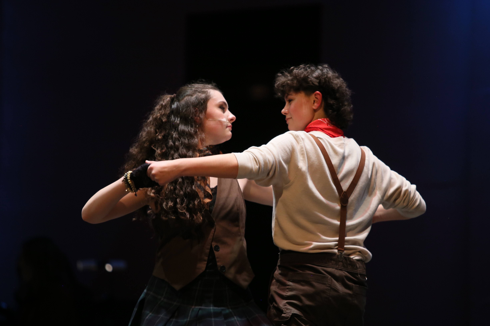
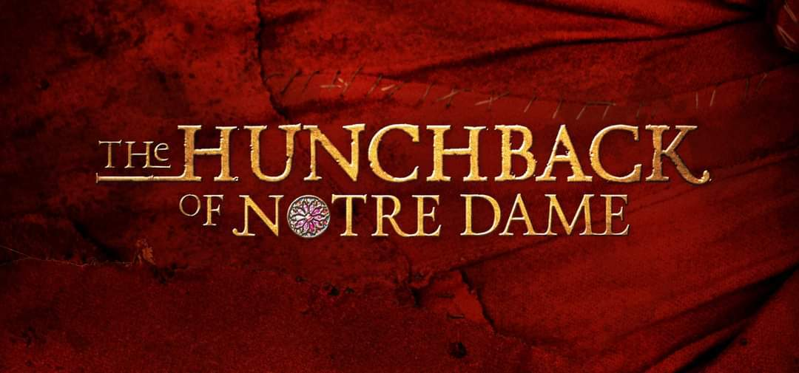

2026
The Phantom of the Opera

The Phantom of the Opera is a Gothic romantic musical (and 1910 novel) about a disfigured, brilliant musician haunting the Paris Opera House. He becomes obsessed with a young soprano, Christine Daaé, grooming her to be a star while terrorizing the opera management, leading to a dramatic love triangle.

Tolland High School was one of the first high schools to be given the honor to produce this show!
Hadestown is a critically acclaimed, Tony winning show combining the two stories of Orpheus and Eurydice, along with Hades and Persephone. Taking place in Hadestown, a city constructed by Hades to impress his wife Persephone, this story explores themes of corruption, industrialization, love, and abandonment through the lense of a modernized greek tragety.
2024
The Hunchback of Notre Dame

The Hunchback of Notre Dame follows Quasimodo, a deformed bell-ringer, who breaks free from the controlling Archdeacon Frollo to experience the 15th-century Paris Feast of Fools. There, he meets the compassionate Romani dancer Esmeralda, sparking a dangerous love triangle between Quasimodo, Frollo, and the dashing Captain Phoebus.

Mary Poppins is a magical musical based on the classic P.L. Travers stories and the 1964 Disney film. It follows the troubled Banks family in 1910 London, whose unruly children have scared off another nanny. The "practically perfect" Mary Poppins arrives on a strange breeze, using magic and common sense to help the family reconnect.